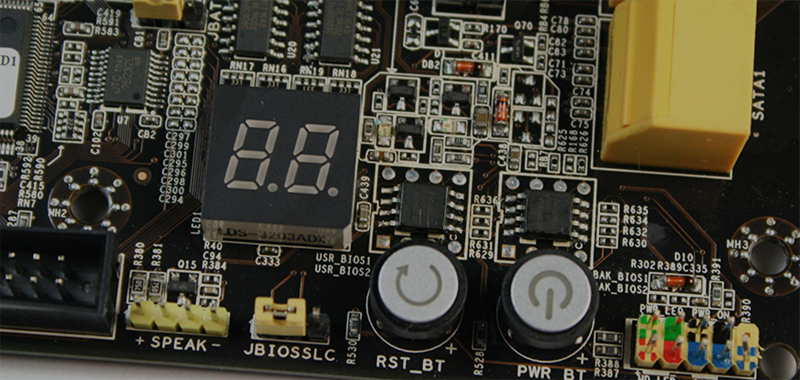
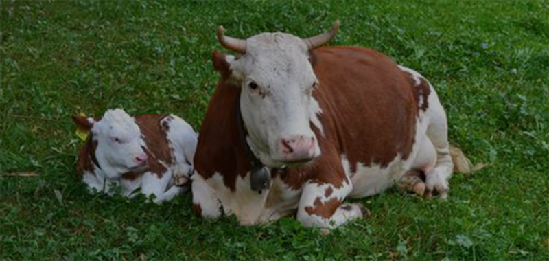

传感器与健康监测
为了保证农场动物的健康与生产性能的和谐共存，以确保长期的回报和利润。我们通过多类传感设备，多维度监控牲畜生命体征和健康状态。

通过给牲畜佩戴运动感应装置，将其运动数据传输到由人工智能驱动的程序里。


当传感器数据与现实世界的活动都保持一致后，从数据中可以实时监测牲 畜在咀嚼、躺下、行走、奔跑、喝水、进食，甚至从出生开始的哺乳情况。
这些数据可以预测某头牛是否生病、是否乏弱、是否受伤、是否进行过打斗。以此实时提醒人们关注这些动物状态变化，提前采取相应措施，更好的关爱农 场动物，尊重其生命过程。